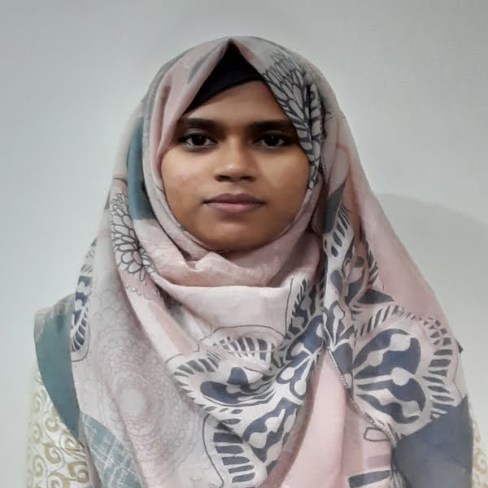

MOST. SURAIYA AKTER
SATHI
Career Objective
Keep up with the cutting edge of technologies & resourceful individual with an eagerness to accept challenges while learning and gaining experience.
Currently seeking an internship position in a good organization.
CONTACT
Address: 133/4, Manikdi Bazar, Dhaka Cantonment, Dhaka.
Phone: +880173928447
Email: suraiyaakter140297@gmail.com
SKILLS
- C/C++/Java programming language,
- JavaScript,
- PHP,
- HTML,
- CSS,
- Web development projects,
- Database programming,
- Microsoft Office
LANGUAGES
Covered Courses
- Structured Programming,
- Object Oriented design and Programming,
- Discrete Mathematics,
- Data Structure,
- Database Management Systems,
- Analysis and Design of Algorithm,
- Operating System,
- Data Communication & Computer Networks,
- System Analysis & Design,
- Information, Network and Software Security,
- Artificial Intelligence,
- Software Testing and Maintenance,
- Data Warehousing and Data Mining,
- Machine Learning,
- Cloud Computing.
Education
Bangladesh University of professionals, Dhaka
BSc in Information and Communication Engineering
2018-2021
Current CGPA : 3.72
Adamjee Cantonment College, Dhaka
Higher Secondary Certificate
2015 -2016
Grade : 5.00
Qadirabad Cantonment Public School, Rajshahi
Secondary School Certificate
2013-2014
Grade : 5.00
PROJECTS
WORK EXPERIENCE
Web Developer Intern | UniShopr
February 2021 - March 2021